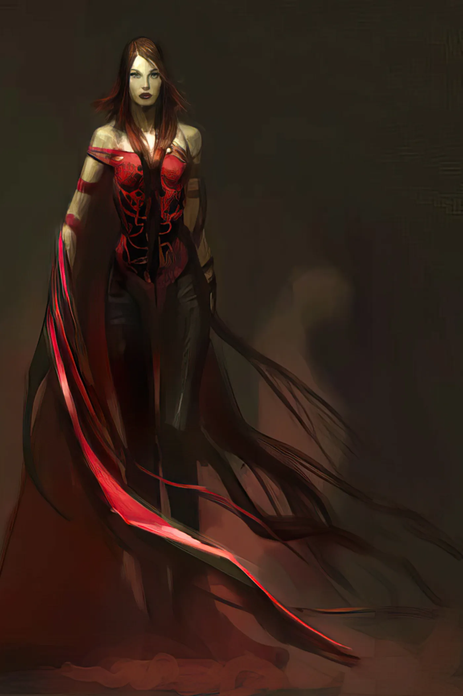

Academy Award-winning production designer and the visual architect of Star Wars, Doug Chiang was the first artist Frank Beddor brought to The Looking Glass Wars.
He didn't just imagine Wonderland.
He made it believable.

Academy Award-winning director of KPop Demon Hunters, Chris Appelhans gave LGW one of its most haunting images: a teenage Rose Heart, years before she became Queen Redd.
He drew the girl before the catastrophe.

Concept artist on The Shape of Water, Vincent Proce painted the image of Hatter Madigan that stopped strangers in their tracks at Comic-Con and became the defining portrait of Wonderland's most beloved bodyguard.
Some images define a franchise. This is one of them.
Concept artist behind Black Panther and God of War, Vance Kovacs expanded the world of LGW beyond Wonderland itself, creating King Arch and the Boarderland—the first nation outside the Queendom.
He didn't just paint a character. He expanded the map.